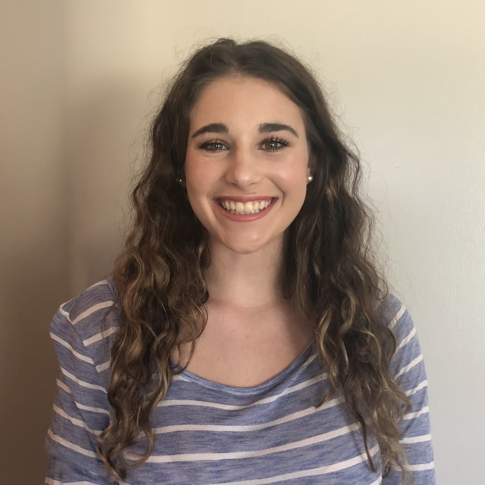

STUDENTS
Prospective students: I will be recruiting PhD students to start in Fall 2020. If you are a prospective PhD student interested in working with me, please apply to the UMSI PhD program. If you are a current UM masters student or undergraduate student interested in working with me, please email me with your CV/resume and research interests. I am particularly interested in working with students who want to conduct research on one or more of the following topics: 1) life transitions and social technologies 2) transgender and/or LGBQ+ people and social technologies 3) social media content moderation and marginalized populations.
PhD Students
Dan Delmonaco

PhD Student, co-advised by Gabi Marcu
pronouns: he/him
research interests: health information practices, information access, digital resources
Hayden Le

PhD Student, co-advised by Libby Hemphill
pronouns: they/them or he/him
research interests: computer-mediated communication, computational social science, natural language processing, human-computer interaction, behavior change
Masters Students
Taika Augustaitis

Masters Student, Information
pronouns: he/him
research interests: social media, social determinants of health, human-computer interaction, information seeking needs of marginalized communities
Justin Buss

Masters Student, Information
pronouns: he/him
research interests: gender, social media, identity formation and management, information behaviors
Dykee Gorrell

REMS Visiting Masters Student
pronouns: she/her
research interests: data science, machine learning algorithms, technology, climate change, food deserts, carceral systems, black transgender women, homelessness
Denny Starks

Masters Student, Information
pronouns: they/them
research interests: understanding how transgender and non-binary people of color practice safety and the types of violence they experience in different contexts and environments - to design technology to support their safety
Undergraduate Students
AJ Carter
Undergraduate Student, Information
pronouns: he/him
research interests: social media, LGBTQ+, sociocultural anthropology
Shanley Corvite

Undergraduate Student, Information
pronouns: she/her
research interests: social media, user experience
Jasmine Glover

Undergraduate Student, Industrial and Operations Engineering
pronouns: she/her
research interests: social media, behavior, data analytics
Lingbo Wang

Undergraduate Student, Statistics
pronouns: she/her
research interests: social media, computational social science, marketing models
Zu Weinger

Undergraduate Student, Sociology
pronouns: he/him
research interests: trans people's experiences and interactions with technology, social media, and the world
Brookelyn Wheeler
Undergraduate Student, Biopsychology, Cognition, and Neuroscience
pronouns: she/her
research interests: human thoughts and behavior